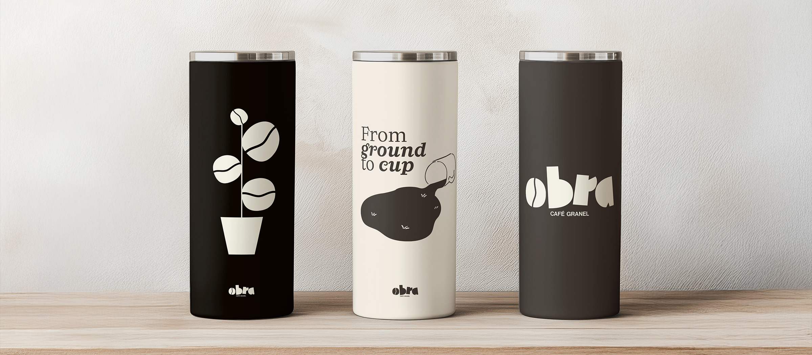
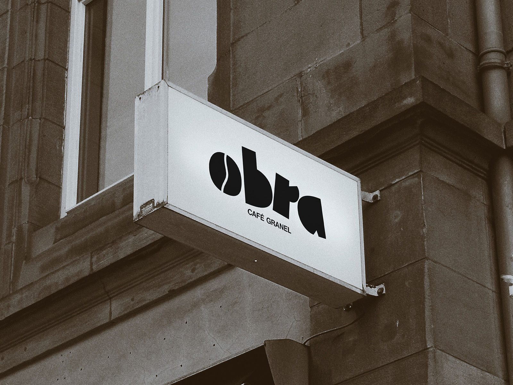
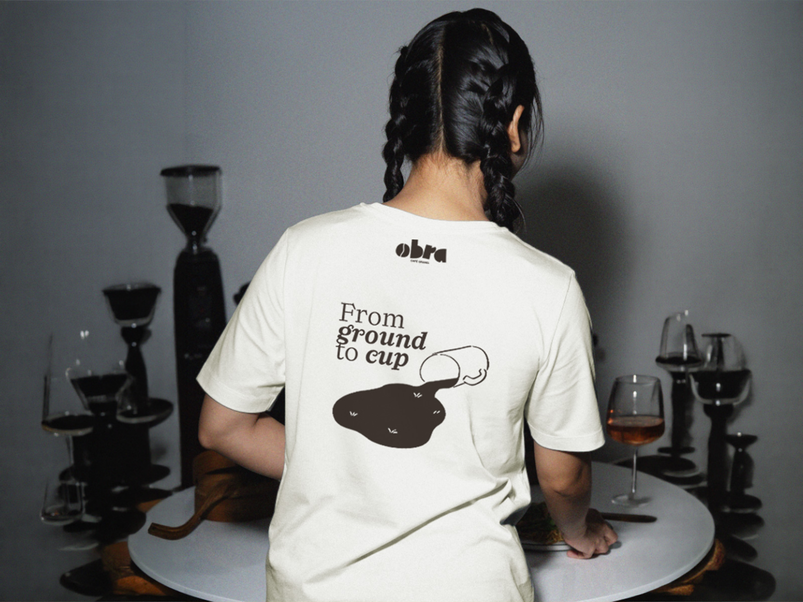
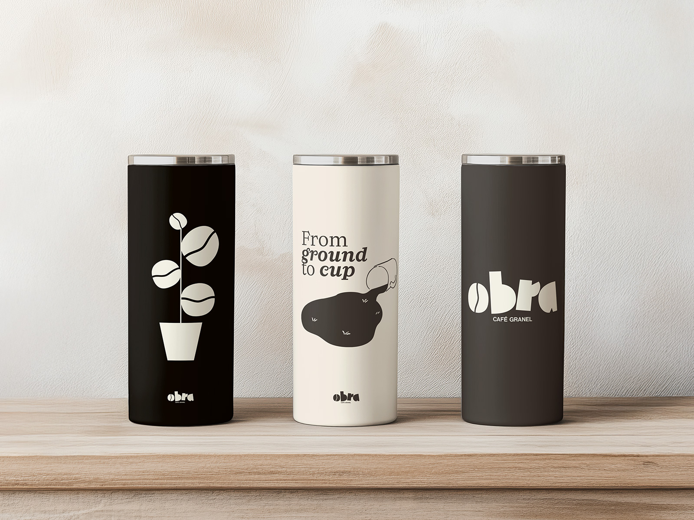
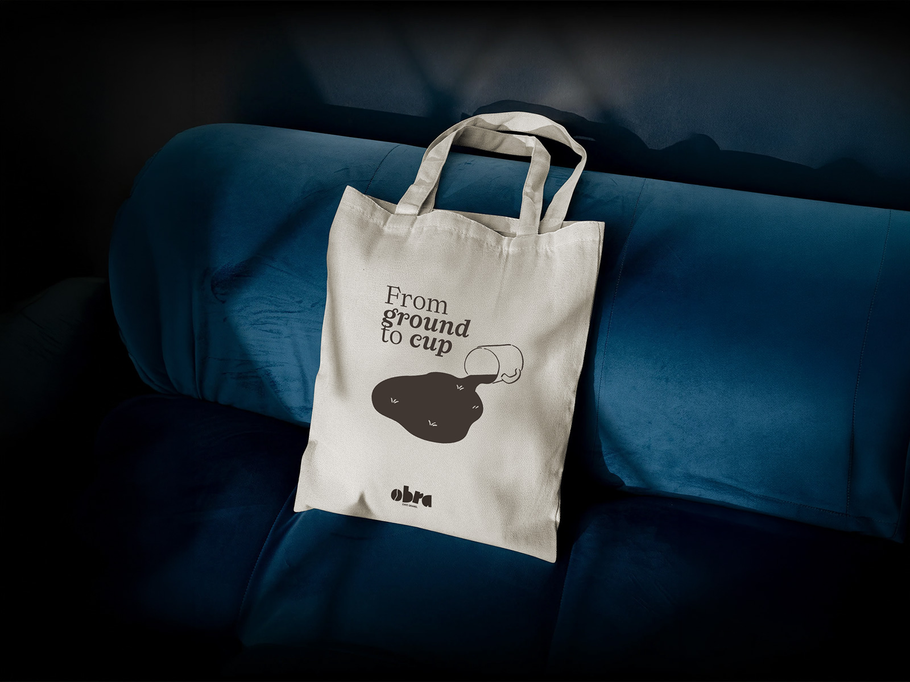
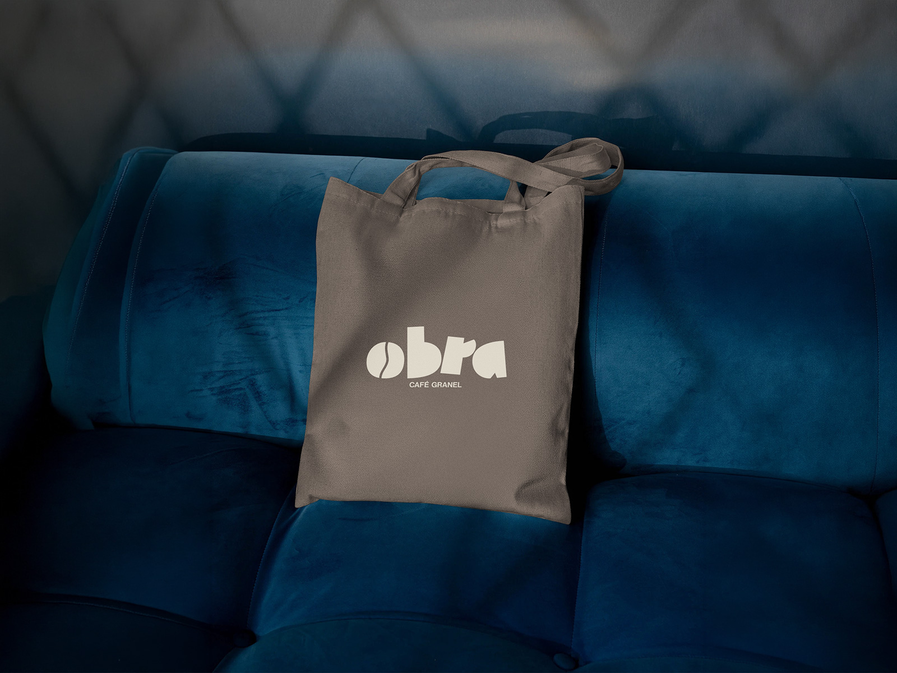
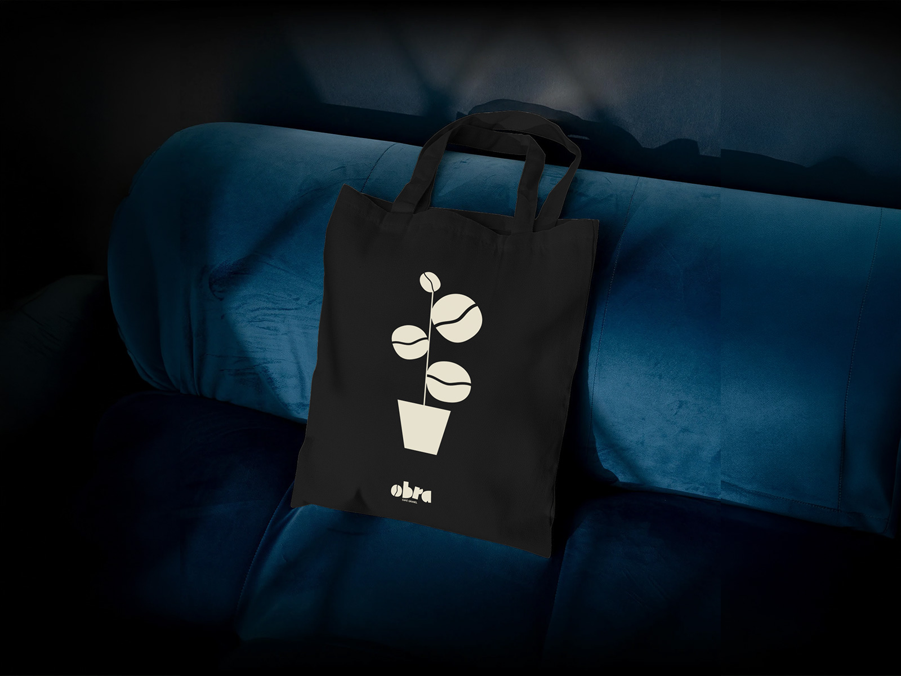

proyectos / OBRA Café
Cuando diseñé la identidad visual de Obra Café, mi objetivo fue crear una marca que conectara con el amor por el café artesanal y todo lo que hay detrás, desde el grano hasta la taza.

El nombre “Obra” habla de ese proceso personal y único que vive cada cliente al preparar su café, y quise reflejar eso en un logo con personalidad, donde la “O” es una semilla de café que conecta con el origen del producto.
El packaging lo diseñé funcional para que el producto hable por sí solo, con etiquetas claras y materiales sostenibles que respetan la filosofía de la marca.
Este proyecto fue una oportunidad para crear una marca con alma, que invite a vivir la experiencia del café desde el respeto por el origen y el cuidado del planeta.





